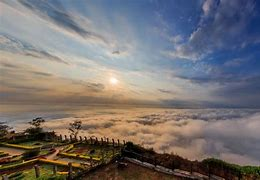

Lalbagh Botanical Garden is located in Bangalore and is nationally and
internationally renowned centre for botanical artwork, scientific study
of plants and also conservation of plants. A haven for all nature lovers,
Lal Bagh covers an area 240 acres in the heart of the city and has nearly
1,854 species of plants. It was commissioned by Hyder Ali in 1760 and completed by his son Tipu Sultan.
The garden features rare plants of French, Persian and Afghani origin
and has attained the status of a Government Botanical Garden. The Lal Bagh Rock which
is over 3000 million years old is found here and is a major tourist attraction.Flower shows are
conducted
every year during the week of Republic day and Independence day, to educate people about the variety of
flora and develop public interest in plant conservation and cultivation.[18] In August 2022, on the
occasion
of 75th Independence Day, flower show was conducted in the honour of Rajkumar and Puneeth Rajkumar
depicting
their life journey. It was attended by 8.34 lakh people.[19]

Nandi Hills
There are only a few places on earth which provide an environment filled with sheer excitement
and tranquility at the same time. The Nandi Hills located near the city of Bangalore is one such
paradise for every traveler around the world. The breathtaking view and the entire trekking experience
that you get here is matchless and quite popular among the residents of the city and its surroundings.
There are many stories about the origin of the name Nandi Hills. During the Chola period, Nandi Hills
was called
Anandagiri meaning The Hill of Happiness.[6] It is also perhaps called Nandi Hills because the hills
resemble a
sleeping bull. Another theory holds that the hill gets its name from an ancient, 1300-year-old,
Dravidian-style
temple, and for the Nandi (bull), statue situated on this hill.[citation needed]
Fun Word Water Park
Location of Fun World Amusement Park, Bangalore: Palace Ground, J C Nagar, Bangalore
Timings of Fun World Amusement Park, Bagngalore: Fun World 11:00 am to 07:30 pm; every
day Water World 11:00 am to 04:30 pm; every day ...
Entry Fee of Fun World Amusement Park, Bangalore: Fun World ₹ 750 per person Water World
₹ 900 per person ...
Give a kick-start to your weekend at Fun World Amusement Park in Bangalore.
Located in the heart of the city centre, the Fun World Amusement Park is one of
the finest and oldest amusement parks in India that promises a heavy dose of
excitement with an experience filled with unlimited fun, laughter, and luxury.